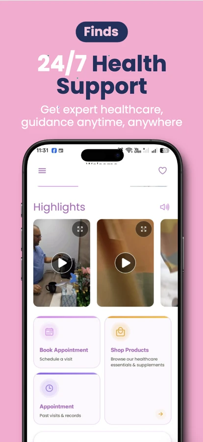
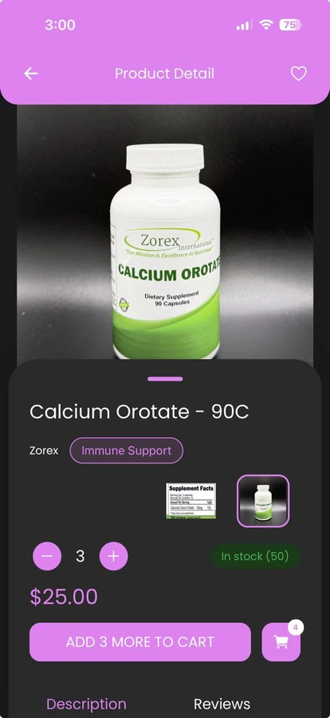
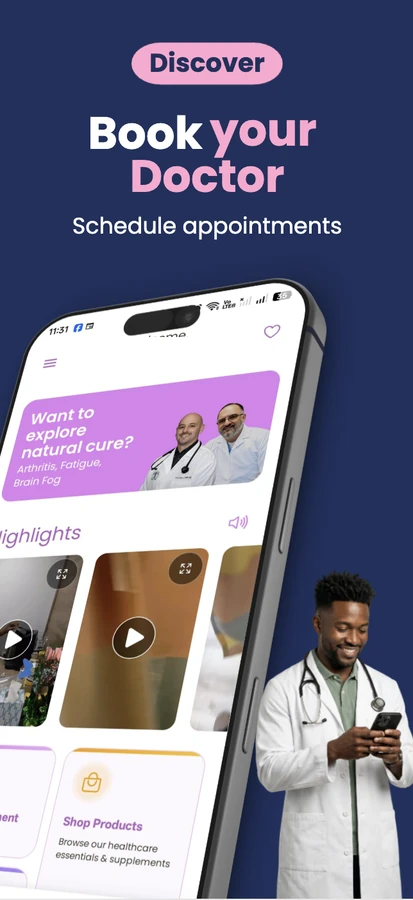
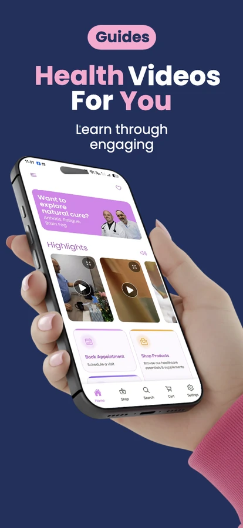
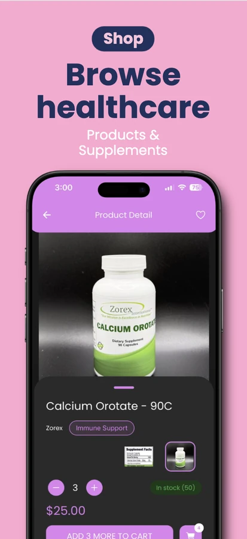

Care, guidance and shopping, in one app.
Rheumatology Consultants came to us with a clinic that ran on phone calls and paper folders. We designed and built a single connected product where patients book appointments, learn from expert health content and order healthcare essentials, all from one app, backed by a secure clinic dashboard.



One clinic, three very different needs.
Rheumatology Consultants runs a busy practice, and their patients needed more than a booking form. They needed a way to reach a doctor, understand a long-term condition, and get the right supplements, without juggling three different apps or websites.
The brief was to combine appointment booking, video-based health education and a healthcare shop into one mobile experience that still felt calm and simple, while giving the clinic team a dashboard to run appointments, content and orders behind the scenes.
The hard part was keeping it simple on the surface. Three product domains can easily turn into three disconnected apps stitched together. Patients needed one home screen, one login and one place to pick up where they left off.
Combine medical appointments, patient education and e-commerce in a single mobile app, without the experience feeling fragmented, while keeping the backend structured enough to grow with the clinic.
Rheumatology patients, many managing long-term conditions, along with the clinic's front-desk and medical staff.
A native-feeling mobile app for iOS and Android, plus a web dashboard for the clinic team.
Delivered in stages, from a working pilot with a small patient group through to full rollout.
How our team got there
A healthcare product needs extra care around data privacy and real patient behaviour, so we built it in deliberate stages rather than all at once.
Research and data design
We reviewed patient data privacy requirements first and shaped the database around field-level protection before any screen was designed.
Design with real patients
Several rounds of wireframes with the clinic showed us that older patients needed larger tap targets and plainer language, so we simplified every screen.
Build in parallel
The React Native app, the NestJS APIs and the Next.js dashboard were built side by side, sharing types and logic to keep everything in sync.
Pilot, then roll out
We launched to a small group of active patients first, gathered real feedback for a few months, then resolved the top issues before wider release.
Designed around three everyday actions
Rather than a long menu of options, the home screen narrows healthcare down to a few clear choices: book a doctor, learn something, or shop for what's recommended.
Booking a doctor takes seconds, not phone calls
Appointment discovery and booking sit right on the home screen, so patients don't have to hunt through menus to reach the one action that matters most. Fewer taps between intent and a confirmed visit meant fewer missed bookings for the clinic.
Learning doesn't stop when the appointment ends
Short, expert-led videos on rheumatology and related conditions give patients a way to keep learning between visits. Content is organised so a patient can find something relevant in a few taps, not a search bar full of unrelated results.

Supplements and essentials, part of the same journey
Recommended products sit inside the same app as appointments and education, instead of living on a separate storefront. That keeps the whole care journey, from diagnosis to daily supplements, in one place patients already trust.

Enough information to buy with confidence
Every product page combines clear photography, category labels, live stock counts, quantity controls and pricing in one mobile-first layout, so a patient can decide and check out without leaving the app or second-guessing the purchase.
Full-stack foundations for a multi-domain product
Every layer was chosen for the same reason: keep appointments, content and commerce working as connected domains instead of three separate apps stitched together.
 React Native
React NativeOne shared codebase for iOS and Android
 Next.js
Next.jsSecure clinic dashboard for daily operations
 NestJS
NestJSTyped backend APIs across every module
 PostgreSQL
PostgreSQLStructured, relational patient and order data
 Tailwind CSS
Tailwind CSSFast, consistent styling for the dashboard
A calmer way to run the clinic
Real numbers from the pilot and rollout, not projections.
Active patients in the closed pilot before wider rollout
Months of real patient feedback collected and reviewed
Top reported issues resolved before general release
Single app replacing phone bookings, guidance and a separate shop
"We treated appointments, education and commerce as one connected product from day one, not three features bolted together after the fact."
The Analytic Insider teamBuilding something similar?
If you're weighing up a mobile app, a clinic or admin dashboard, or a product that has to connect a few different journeys into one, we'd be glad to talk it through.